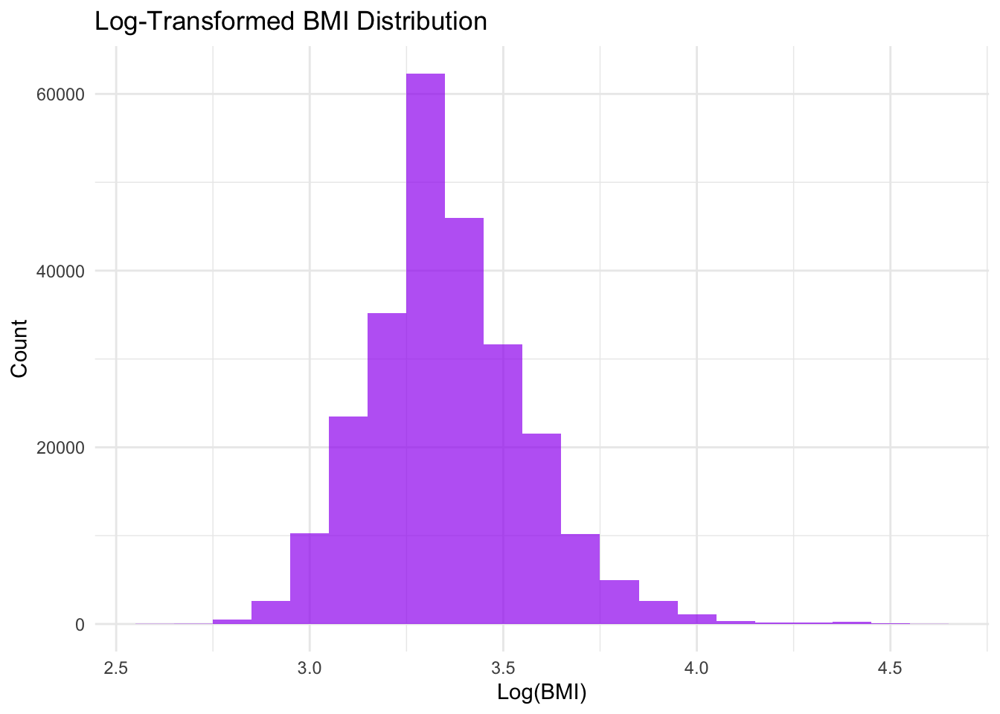

The dataset “Diabetes Health Indicators” comprises data collected through the Behavioral Risk Factor Surveillance System (BRFSS) in 2015. This dataset includes a variety of health-related metrics and demographic information for individuals, with a particular emphasis on diabetes prevalence.
Key Variables for Analysis
Diabetes_binary: A binary response variable indicating diabetes diagnosis (1 for diagnosed, 0 for not diagnosed).
HighBP: Indicates whether the respondent has high blood pressure (1 for yes, 0 for no).
HighChol: Indicates if the respondent has high cholesterol.
CholCheck: Indicates if the respondent had a cholesterol check in the past five years.
BMI: Body Mass Index, calculated from the respondent’s height and weight.
Smoker: Indicates current smoking status.
PhysActivity: Indicates if the respondent participates in any physical activity.
Fruits and Veggies: Consumption indicators.
GeneralHealth: Self-reported health status on a scale from excellent to poor.
Age: Categorical age ranges.
Sex: Gender of the respondent.
Purpose of EDA
The primary goals of this exploratory data analysis (EDA) are to: 1. Understand Data Structure: Examine data storage formats and validate data integrity. 2. Data Validation: Perform checks for missing values and data consistency. 3. Data Cleaning: Handle missing values and convert variables into appropriate formats, like factors with meaningful level names. 4. Distributions Analysis: Analyze distributions of individual variables and investigate their relationships with the response variable, Diabetes_binary. 5. Data Transformation: Apply necessary transformations, re-examine distributions, and relationships.
Data Import and Cleaning
Importing Data
library(tidyverse)
── Attaching core tidyverse packages ──────────────────────── tidyverse 2.0.0 ──
✔ dplyr 1.1.4 ✔ readr 2.1.4
✔ forcats 1.0.0 ✔ stringr 1.5.1
✔ ggplot2 3.5.1 ✔ tibble 3.2.1
✔ lubridate 1.9.3 ✔ tidyr 1.3.0
✔ purrr 1.0.2
── Conflicts ────────────────────────────────────────── tidyverse_conflicts() ──
✖ dplyr::filter() masks stats::filter()
✖ dplyr::lag() masks stats::lag()
ℹ Use the conflicted package (<http://conflicted.r-lib.org/>) to force all conflicts to become errors
# Load the datasetdata_path <-"../diabetes_binary_health_indicators_BRFSS2015.csv"diabetes_data <-read_csv(data_path)
Rows: 253680 Columns: 22
── Column specification ────────────────────────────────────────────────────────
Delimiter: ","
dbl (22): Diabetes_binary, HighBP, HighChol, CholCheck, BMI, Smoker, Stroke,...
ℹ Use `spec()` to retrieve the full column specification for this data.
ℹ Specify the column types or set `show_col_types = FALSE` to quiet this message.
# Display the first few rows of the datahead(diabetes_data)
Diabetes_binary HighBP HighChol CholCheck
Min. :0.0000 Min. :0.000 Min. :0.0000 Min. :0.0000
1st Qu.:0.0000 1st Qu.:0.000 1st Qu.:0.0000 1st Qu.:1.0000
Median :0.0000 Median :0.000 Median :0.0000 Median :1.0000
Mean :0.1393 Mean :0.429 Mean :0.4241 Mean :0.9627
3rd Qu.:0.0000 3rd Qu.:1.000 3rd Qu.:1.0000 3rd Qu.:1.0000
Max. :1.0000 Max. :1.000 Max. :1.0000 Max. :1.0000
BMI Smoker Stroke HeartDiseaseorAttack
Min. :12.00 Min. :0.0000 Min. :0.00000 Min. :0.00000
1st Qu.:24.00 1st Qu.:0.0000 1st Qu.:0.00000 1st Qu.:0.00000
Median :27.00 Median :0.0000 Median :0.00000 Median :0.00000
Mean :28.38 Mean :0.4432 Mean :0.04057 Mean :0.09419
3rd Qu.:31.00 3rd Qu.:1.0000 3rd Qu.:0.00000 3rd Qu.:0.00000
Max. :98.00 Max. :1.0000 Max. :1.00000 Max. :1.00000
PhysActivity Fruits Veggies HvyAlcoholConsump
Min. :0.0000 Min. :0.0000 Min. :0.0000 Min. :0.0000
1st Qu.:1.0000 1st Qu.:0.0000 1st Qu.:1.0000 1st Qu.:0.0000
Median :1.0000 Median :1.0000 Median :1.0000 Median :0.0000
Mean :0.7565 Mean :0.6343 Mean :0.8114 Mean :0.0562
3rd Qu.:1.0000 3rd Qu.:1.0000 3rd Qu.:1.0000 3rd Qu.:0.0000
Max. :1.0000 Max. :1.0000 Max. :1.0000 Max. :1.0000
AnyHealthcare NoDocbcCost GenHlth MentHlth
Min. :0.0000 Min. :0.00000 Min. :1.000 Min. : 0.000
1st Qu.:1.0000 1st Qu.:0.00000 1st Qu.:2.000 1st Qu.: 0.000
Median :1.0000 Median :0.00000 Median :2.000 Median : 0.000
Mean :0.9511 Mean :0.08418 Mean :2.511 Mean : 3.185
3rd Qu.:1.0000 3rd Qu.:0.00000 3rd Qu.:3.000 3rd Qu.: 2.000
Max. :1.0000 Max. :1.00000 Max. :5.000 Max. :30.000
PhysHlth DiffWalk Sex Age
Min. : 0.000 Min. :0.0000 Min. :0.0000 Min. : 1.000
1st Qu.: 0.000 1st Qu.:0.0000 1st Qu.:0.0000 1st Qu.: 6.000
Median : 0.000 Median :0.0000 Median :0.0000 Median : 8.000
Mean : 4.242 Mean :0.1682 Mean :0.4403 Mean : 8.032
3rd Qu.: 3.000 3rd Qu.:0.0000 3rd Qu.:1.0000 3rd Qu.:10.000
Max. :30.000 Max. :1.0000 Max. :1.0000 Max. :13.000
Education Income
Min. :1.00 Min. :1.000
1st Qu.:4.00 1st Qu.:5.000
Median :5.00 Median :7.000
Mean :5.05 Mean :6.054
3rd Qu.:6.00 3rd Qu.:8.000
Max. :6.00 Max. :8.000
Data Validation
We check for missing values to ensure data completeness and validate the consistency of data types.
# Check for missing valuesmissing_values <-colSums(is.na(diabetes_data))missing_values
We explore the distribution of each key variable, focusing particularly on those most relevant to diabetes prevalence.
# Plot distribution of Ageggplot(diabetes_data, aes(x = Age)) +geom_bar(fill ="skyblue", alpha =0.7) +theme_minimal() +labs(title ="Age Distribution", x ="Age Range", y ="Count")
# Plot distribution of BMIggplot(diabetes_data, aes(x = BMI)) +geom_histogram(binwidth =1, fill ="green", alpha =0.7) +theme_minimal() +labs(title ="BMI Distribution", x ="BMI", y ="Count")
# Distribution of Diabetes_binaryggplot(diabetes_data, aes(x = Diabetes_binary)) +geom_bar(fill ="orange", alpha =0.7) +theme_minimal() +labs(title ="Distribution of Diabetes Status", x ="Diabetes Status", y ="Count")
Multivariate Analysis
We explore relationships between variables, with an emphasis on how they relate to the response variable Diabetes_binary.
# Relationship between Age and Diabetesggplot(diabetes_data, aes(x = Age, fill = Diabetes_binary)) +geom_bar(position ="fill", alpha =0.7) +theme_minimal() +labs(title ="Age and Diabetes", x ="Age Range", y ="Proportion", fill ="Diabetes")
# BMI vs. Diabetesggplot(diabetes_data, aes(x = BMI, fill = Diabetes_binary)) +geom_histogram(binwidth =1, position ="fill", alpha =0.7) +theme_minimal() +labs(title ="BMI and Diabetes", x ="BMI", y ="Proportion", fill ="Diabetes")
Warning: Removed 6 rows containing missing values or values outside the scale range
(`geom_bar()`).
# General Health vs. Diabetesggplot(diabetes_data, aes(x = GeneralHealth, fill = Diabetes_binary)) +geom_bar(position ="fill", alpha =0.7) +theme_minimal() +labs(title ="General Health and Diabetes", x ="General Health", y ="Proportion", fill ="Diabetes")
Data Transformations
If necessary, we apply transformations such as logarithmic scaling to improve the analysis and visualization.
# Example: Log transformation of BMI if neededdiabetes_data <- diabetes_data %>%mutate(BMI_log =log(BMI +1)) # Adding 1 to avoid log(0)# Re-check distribution of transformed BMIggplot(diabetes_data, aes(x = BMI_log)) +geom_histogram(binwidth =0.1, fill ="purple", alpha =0.7) +theme_minimal() +labs(title ="Log-Transformed BMI Distribution", x ="Log(BMI)", y ="Count")

Conclusion
The exploratory data analysis provided valuable insights into the distribution and relationships among key health indicators related to diabetes. We observed significant associations between variables such as age, BMI, and general health status with diabetes prevalence. These findings will guide the feature selection and model building processes in the subsequent stages. Further steps will include more detailed statistical analysis, feature engineering, and predictive modeling to better understand and predict diabetes status.